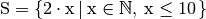
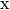
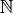
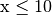

Empezando¶
¡Preparados, listos, ya!¶

Muy bien ¡Vamos a empezar! Si eres esa clase de persona horrible que no lee las introducciones y te la has saltado, quizás quieras leer la última sección de la introducción de todos modos porque explica lo que necesitas para seguir esta guía y como vamos a cargar funciones. La primera cosa que vamos a hacer es ejecutar GHC en modo interactivo y llamar algunas funciones para ir acostumbrándonos un poco. Abre tu terminal y escribe ghci. Serás recibido con un saldo como este.
GHCi, version 6.8.2: http://www.haskell.org/ghc/ :? for help
Loading package base ... linking ... done.
Prelude>
¡Enhorabuena, estás dentro de GHCi! El prompt aquí es Prelude> pero debido a que éste puede hacerse más largo cuando cargas cosas dentro de la sesión, nosotros vamos a usar ghci>. Si quieres tener el mismo prompt, simplemente teclea :set prompt "ghci> ".
Aquí va algo de aritmética simple.
ghci> 2 + 15
17
ghci> 49 * 100
4900
ghci> 1892 - 1472
420
ghci> 5 / 2
2.5
ghci>
Esto se explica por si solo. Podemos también usar varias operaciones en una misma línea y todas las reglas de precedencia usuales serán obedecidas. Podemos usar paréntesis para hacer la precedencia explícita o cambiarla.
ghci> (50 * 100) - 4999
1
ghci> 50 * 100 - 4999
1
ghci> 50 * (100 - 4999)
-244950
¿Muy interesante, eh? Sí, se que no pero ten paciencia. Una pequeña dificultad a tener en cuenta aquí ocurre al negar los números, siempre será mejor rodearlo con paréntesis. Hacer algo como 5 * -3 hará que GHCi te grite pero hacer 5 * (-3) simplemente funcionará.
La álgebra booleana es también bastante simple. Como seguramente sabrás, && representa Y booleano mientras que || representa O booleano. not niega True a False.:
ghci> True && False
False
ghci> True && True
True
ghci> False || True
True
ghci> not False
True
ghci> not (True && True)
False
La comprobación de igualdad se hace así:
ghci> 5 == 5
True
ghci> 1 == 0
False
ghci> 5 /= 5
False
ghci> 5 /= 4
True
ghci> "hello" == "hello"
True
¿Qué pasa si realizamos un 5 + "llama" o 5 == True? Bueno, si probamos el primer fragmento obtendremos un terrorífico mensaje de error.
No instance for (Num [Char])
arising from a use of `+' at <interactive>:1:0-9
Possible fix: add an instance declaration for (Num [Char])
In the expression: 5 + "llama"
In the definition of `it': it = 5 + "llama"
¡Ay! Lo que GHCi nos está diciendo es que "llama" no es un número y por lo tanto no sabe como sumarlo a 5. Incluso si no fuera "llama" sino "four" o "4", Haskell aún no lo consideraría como un número. + espera que su parte derecha e izquierda sean números. Si intentamos realizar True == 5, GHCi nos diría que los tipos no coinciden. Mientras que + funciona solo con cosas que son consideradas números, == funciona con cualquiera cosa que pueda ser comparada. El truco está en que ambas cosas tienen que ser iguales. No puedes comparar manzanas con naranjas. Daremos un vistazo más detallado sobre los tipos más adelante. Nota: puedes hacer 5 + 4.0 porque 5 es amorfo y puede actuar como un entero o como un número en coma flotante. 4.0 no puede actuar como un entero, así que 5 es el único que se puede adaptar.
Puede que no lo sepas, pero hemos estado usando funciones durante todo este tiempo. Por ejemplo, * es una función que toma dos números y los multiplica. Como ya has visto, lo llamamos haciendo un sándwich sobre él. Esto es lo que nosotros llamamos funciones infijas. Muchas funciones que no son usadas con números son prefijas. Vamos a ver alguna de ellas.

Las funciones son prefijas normalmente así que de ahora en adelante no vamos ha declarar explícitamente que una función está en forma prefija, simplemente lo asumiremos. En muchos lenguajes imperativos las funciones son llamadas escribiendo su nombre y luego escribiendo sus parámetros entre paréntesis, normalmente separados por comas. En Haskell, las funciones son llamadas escribiendo su nombre, un espacio y sus parámetros, separados por espacios. Para empezar, vamos a intentar llamar una de las funciones más aburridas de Haskell.
ghci> succ 8
9
La función succ toma cualquier cosa que tenga definido un sucesor y devuelve ese sucesor. Como puedes ver, simplemente hemos separado el nombre de la función y su parámetro por un espacio. Llamar a una función con varios parámetros es igual de sencillo. Las funciones min y max toman dos cosas que puedan ponerse en orden (¡Cómo los números!) y devuelven uno de ellos.
ghci> min 9 10
9
ghci> min 3.4 3.2
3.2
ghci> max 100 101
101
La aplicación de funciones (Llamar a una función poniendo un espacio después de ella y luego escribir sus parámetros) tiene la máxima prioridad. Lo que esto significa para nosotros es que estas dos sentencias son equivalentes.
ghci> succ 9 + max 5 4 + 1
16
ghci> (succ 9) + (max 5 4) + 1
16
Sin embargo, si hubiésemos querido obtener el sucesor del producto de los números 9 y 10, no podríamos haber escrito succ 9 * 10 porque hubiésemos obtenido el sucesor de 9, el cual hubiese sido multiplicado por 10. Obtendríamos 100. Tenemos que escribir succ (9 * 10) para obtener 91.
Si una función toma dos parámetros también podemos llamarla como una función infija rodeándola con acentos abiertos. Por ejemplo, la función div toma dos enteros y realiza una división integral entre ellos. Haciendo div 92 10 obtendríamos 9. Pero cuando la llamamos así, puede haber alguna confusión como que número está haciendo la división y cual está siendo dividido. De manera que nosotros la llamamos como una función infija haciendo 92 `div` 10 y de repente es mucho más claro.
Un montón de gente que viene de los lenguajes imperativos tienden a aferrarse a la idea de que los paréntesis indican la aplicación de funciones. Por ejemplo, en C, usas los paréntesis para llamar a las funciones como foo(), bar(1), o baz(3, "haha"). Como hemos dicho, los espacios son usados para la aplicación de funciones en Haskell. Así que estas funciones en Haskell serían foo, bar 1 y baz 3 "haha". Si ves algo como bar (bar 3) no significa que bar es llamado con bar y 3 como parámetros. Significa que primero llamamos a la función bar con 3 como parámetro para obtener un número y luego volver a llamar bar otra vez con ese número. En C, esto sería algo como bar(bar(3)).
Las primeras pequeñas funciones¶
En la sección anterior obtuvimos una idea básica para llamar a las funciones. ¡Ahora vamos a intentar hacer las nuestras! Abre tu editor de textos favorito y pega esta función que toma un número y lo multiplica por dos.
doubleMe x = x + x
Las funciones son definidas de forma similar a como son llamadas. El nombre de la función es seguido por los parámetros separados por espacios. Pero, cuando estamos definiendo funciones, hay un = y luego definimos lo que hace la función. Guarda esto como baby.hs o como tú quieras. Ahora navega hasta donde lo guardaste y ejecuta ghci desde ahí. Una vez dentro de GHCi, haz :l baby. Ahora que nuestro script está cargado, podemos jugar con la función que hemos definido.
ghci> :l baby
[1 of 1] Compiling Main ( baby.hs, interpreted )
Ok, modules loaded: Main.
ghci> doubleMe 9
18
ghci> doubleMe 8.3
16.6
Como + funciona con los enteros igual de bien que con los número en coma flotante (en realidad con cualquier cosa que pueda ser considerada un número), nuestra función también funciona con cualquier número. Vamos a hacer una función que tome dos números, multiplique por dos cada uno de ellos y luego sume ambos.
doubleUs x y = x*2 + y*2
Simple. La podríamos haber definido también como doubleUs x y = x + x + y + y. Al ponerla a prueba produce resultandos bastante predecibles (recuerda añadir esta función en el fichero baby.hs, guardarlo y luego :l baby dentro de GHCi).
ghci> doubleUs 4 9
26
ghci> doubleUs 2.3 34.2
73.0
ghci> doubleUs 28 88 + doubleMe 123
478
Como podrás deducir, puedes llamar tus propias funciones dentro de las funciones que hagas. Con esto en mente, podríamos redefinir doubleUs como esto:
doubleUs x y = doubleMe x + doubleMe y
Esto es un simple ejemplo de un patrón normal que verás por todo Haskell. Crear pequeñas funciones que son obviamente correctas y luego combinarlas en funciones más complejas. De esta forma también evitarás repetirte. ¿Qué pasa si algunos matemáticos descubren que 2 es en realidad 3 y tienes que cambiar tu programa? Puedes simplemente redefinir doubleMe para que sea x + x + x y como doubleUs llama a doubleMe automáticamente funcionara en este extraño mundo en el que 2 es 3.
Las funciones en Haskell no tienen que estar en ningún orden en particular, así que no importa si defines antes doubleMe y luego doubleUs o si lo haces en algún otro lugar.
Ahora vamos a crear una función que multiplique un número por 2 pero solo si ese número es menor o igual que 100 porque los número mayores 100 ya son suficientemente grandes por si solos.
doubleSmallNumber x = if x > 100
then x
else x*2

Aquí hemos introducido la sentencia if de Haskell. Probablemente ya estés familiarizado con la sentencia if de otros lenguajes. La diferencia entre la sentencia if de Haskell y la de los lenguajes imperativos es que la para else de la sentencia es obligatoria en Haskell. En los lenguajes imperativos puede saltarte un par de pasos si una condición no se ha satisfecho pero en Haskell cada expresión y función debe devolver algo. También podríamos haber definido la sentencia if en una línea pero encuentro esta forma más legible. Otro tema acerca de la sentencia if en Haskell es que es una expresión. Básicamente una expresión es un trozo de código que devuelve un valor. 5 es una expresión porque devuelve 5, 4 + 8 es una expresión, x + y es una expresión porque devuelve la suma de x e y. Como la parte else es obligatoria, una sentencia if siempre debe devolver algo y ese es el porque de que es una expresión. Si queremos añadir uno a cada número que es producido por nuestra función anterior, podemos escribir su cuerpo así.
doubleSmallNumber' x = (if x > 100 then x else x*2) + 1
Si hubiésemos omitido los paréntesis, sólo hubiese añadido uno si x no fuera mayor que 100. Fíjate en el ' al final del nombre de la función. Ese apostrofare no tiene ningún significado especial en la sintaxis de Haskell. Es un carácter valido para ser usado en el nombre de una función. Normalmente usamos ' para denotar la versión estricta de una función (una que no es perezosa) o una pequeña versión modificada de una función o variable. Como ' es un carácter válido para la funciones, podemos hacer cosas como esta.
conanO'Brien = "It's a-me, Conan O'Brien!"
Hay dos cosas que destacar aquí. La primera es que en esta función no capitalizamos el nombre de Conan. Esto es porque las funciones no pueden empezar con una letra en mayúsculas. Veremos el porqué un poco más tarde. La segunda es que esta función no toma ningún parámetro, normalmente lo llamamos una definición (o un nombre). Como no podemos cambiar los nombres (y las funciones) después de que las hayamos definido, conanO'Brien y la cadena "It's a-me, Conan O'Brien!" se pueden utilizar indistintamente.
Una introducción a las listas¶

Al igual que las listas de compra en la vida real, las listas en Haskell son muy útiles. Es la estructura de datos más utilizada y pueden ser utilizadas de múltiples formas diferentes para modelar y resolver un montón de problemas. Las listas son MUY impresionantes. En esta sección daremos un vistazo a las bases sobre las listas, cadenas (las cuales son listas) y listas por compresión.
En Haskell, las listas son una estructura de datos homogénea. Almacena varios elementos del mismo tipo. Esto significa que podemos tener una lista de enteros o una lista de caracteres pero no podemos tener una lista que tenga unos cuantos enteros y otros cuantos más caracteres. Y ahora, ¡una lista!
Nota
Podemos usar la palabra reservada let para definir un nombre en GHCi. Hacer let a = 1 dentro de GHCi es equivalente ha escribir a = 1 en un script y luego cargarlo.
ghci> let lostNumbers = [4,8,15,16,23,42]
ghci> lostNumbers
[4,8,15,16,23,42]
Como puedes ver, las listas se indican mediante corchetes y sus valores se separan por comas. Si hemos intentado crear una lista como esta [1, 2, 'a', 3, 'b','c',4], Haskell nos avisaría que los caracteres (que son, por cierto, declarados como un carácter entre comillas simples) no son números. Hablando sobre caracteres, las cadenas son simplemente cadenas de caracteres. "hello" es solo azúcar sintáctica para ['h','e','l','l','o']. Como las cadenas son listas, podemos usar las funciones de listas sobre ellas, lo cual es realmente útil.
Una tarea común es concatenar dos listas. Cosa que conseguimos con el operador ++.
ghci> [1,2,3,4] ++ [9,10,11,12]
[1,2,3,4,9,10,11,12]
ghci> "hello" ++ " " ++ "world"
"hello world"
ghci> ['w','o'] ++ ['o','t']
"woot"
Cuidado cuando usas el operador ++ repetidas veces en una cadena larga. Cuando concatenas dos listas (incluso si añades una lista de un elemento a otra lista, por ejemplo [1,2,3] ++ [4], internamente, Haskell tiene que recorrer la lista entera desde la parte izquierda del operador ++. Esto no es un problema cuando tratamos con listas que no son demasiado grandes. Pero concatenar algo al final de una lista que tiene cincuenta millones de elementos llevará un rato. Sin embargo, concatenar algo al principio de una lista utilizando el operador : (También llamado operador cons) es instantáneo.
ghci> 'A':" SMALL CAT"
"A SMALL CAT"
ghci> 5:[1,2,3,4,5]
[5,1,2,3,4,5]
Fíjate que : toma un número y una lista de números o un carácter y una lista de caracteres, mientras que ++ toma dos listas. Incluso si añades un elemento al final de las lista con ++, hay que rodearlo con corchetes por lo que se convierte en una lista de un solo elemento.
[1,2,3] es solo azúcar sintáctico para 1:2:3:[]. [] es una lista vacía. Si anteponemos 3 a ella con :, obtenemos [3], y si anteponemos 2 a esto obtenemos [2,3].
Nota
[], [[]] y [[],[],[]] son todas cosas diferentes. La primera es una lista vacía, la segunda es una lista que contiene un elemento (otra lista vacía) y la tercera es una lista que contiene tres elementos.
Si quieres obtener un elemento de la lista sabiendo su índice, utiliza !!. Los índices empiezan con 0.
ghci> "Steve Buscemi" !! 6
'B'
ghci> [9.4,33.2,96.2,11.2,23.25] !! 1
33.2
Pero si intentas obtener el sexto elemento de una lista que solo tiene cuatro elementos, obtendrás un error, así que ves con cuidado.
Las listas también pueden contener listas. Estas también pueden contener listas que contengan listas que contengas listas...
ghci> let b = [[1,2,3,4],[5,3,3,3],[1,2,2,3,4],[1,2,3]]
ghci> b
[[1,2,3,4],[5,3,3,3],[1,2,2,3,4],[1,2,3]]
ghci> b ++ [[1,1,1,1]]
[[1,2,3,4],[5,3,3,3],[1,2,2,3,4],[1,2,3],[1,1,1,1]]
ghci> [6,6,6]:b
[[6,6,6],[1,2,3,4],[5,3,3,3],[1,2,2,3,4],[1,2,3]]
ghci> b !! 2
[1,2,2,3,4]
Las listas de dentro de las listas pueden tener diferentes tamaños pero no pueden tener diferentes tipos. De la misma forma que no se pueden tener listas que contengan caracteres y algunos números, tampoco se pueden tener listas que contengan listas de caracteres y listas de números.
Las listas pueden ser comparadas si los elementos que contienen pueden ser comparados. Cuando usamos <, <=, >, y >= para comparar listas, son comparadas en orden lexicográfico. Primero son comparadas las cabezas. Luego son comparados los segundos y así sucesivamente.
¿Qué mas puedes hacer con las listas? Aquí tienes algunas funciones básicas que pueden operar con las listas.
head toma una lista y devuelve su cabeza. La cabeza de una lista es básicamente el primer elemento.
ghci> head [5,4,3,2,1] 5tail toma una lista y devuelve su cola. En otros palabras, corta la cabeza de la lista.
ghci> tail [5,4,3,2,1] [4,3,2,1]last toma una lista y devuelve su último elemento.
ghci> last [5,4,3,2,1] 1init toma una lista y devuelve toda la lista excepto su último elemento.
ghci> init [5,4,3,2,1] [5,4,3,2]
Si pensamos en las listas como en un monstruo, esto es lo que pasa.

¿Pero que pasa si intentamos obtener la cabeza de una lista vacía?
ghci> head []
*** Exception: Prelude.head: empty list
¡Oh, explotó delante de nuestros ojos! Si no hay ningún monstruo, no tiene cabeza. Cuando usamos head, tail, last e init, debemos tener precaución de no usar con ellas listas vacías. Este error no puede ser capturado en tiempo de compilación así que siempre es una buena práctica tomar precauciones antes de decir a Haskell que te devuelva algunos elementos de una lista vacía.
length toma una lista y obviamente devuelve su tamaño.
ghci> length [5,4,3,2,1] 5null comprueba si una lista está vacía. Si lo está, devuelve True, en caso contrario devuelve False. Usa esta función en lugar de xs == [] (si tienes una lista que se llame xs).
ghci> null [1,2,3] False ghci> null [] Truereverse da la vuelta a lista.
ghci> reverse [5,4,3,2,1] [1,2,3,4,5]take toma un número y una lista. Extrae dicho número de elementos de una lista. Observa.
ghci> take 3 [5,4,3,2,1] [5,4,3] ghci> take 1 [3,9,3] [3] ghci> take 5 [1,2] [1,2] ghci> take 0 [6,6,6] []Fíjate que si intentamos tomar más elementos de los que hay en una lista, simplemente devuelve la lista. Si tomamos 0 elementos, obtenemos una lista vacía.
drop funciona de forma similar, solo que quita un número de elementos del comienzo de la lista.
ghci> drop 3 [8,4,2,1,5,6] [1,5,6] ghci> drop 0 [1,2,3,4] [1,2,3,4] ghci> drop 100 [1,2,3,4] []maximum toma una lista de cosas que se pueden poner en algún tipo de orden y devuelve el elemento más grande.
minimum devuelve el más pequeño.
ghci> minimum [8,4,2,1,5,6] 1 ghci> maximum [1,9,2,3,4] 9sum toma una lista de números y devuelve su suma.
product toma una lista de números y devuelve su producto.
ghci> sum [5,2,1,6,3,2,5,7] 31 ghci> product [6,2,1,2] 24 ghci> product [1,2,5,6,7,9,2,0] 0elem toma una cosa y una lista de cosas y nos dice si dicha cosa es un elemento de la lista. Normalmente esta función es llamada en forma infija porque es más fácil de leer de esta forma.
ghci> 4 `elem` [3,4,5,6] True ghci> 10 `elem` [3,4,5,6] False
Estas fueron unas cuantas pocas funciones básicas que operan con las listas. Veremos más funciones de listas más adelante.
Texas Rangos¶

¿Qué pasa si queremos una lista con todos los números entre el 1 y el 20? Claro, podríamos simplemente escribirlos pero obviamente hacer esto no es una solución para los señores que demandan la excelencia de sus lenguajes de programación. En su lugar, usaremos rangos. Los rangos son una manera de crear listas que contengan una secuencia aritmética de elementos numerables. Los números pueden ser enumerados. Uno, dos, tres, cuatro, etc. Los caracteres también pueden ser enumerados. El alfabeto es una enumeración de caracteres desde la A hasta la Z. Los nombres no son numerables. ¿Qué viene después de “John”? No lo se.
Para crear una lista que contenga todos los números naturales desde el 1 hasta el 20 simplemente escribimos [1..20]. Esto es equivalente ha escribir [1,2,3,4,5,6,7,8,9,10,11,12,13,14,15,16,17,18,19,20] y no hay ninguna diferencia entre escribir uno u otro salvo que escribir una secuencia numerable larga manualmente es estúpido.
ghci> [1..20]
[1,2,3,4,5,6,7,8,9,10,11,12,13,14,15,16,17,18,19,20]
ghci> ['a'..'z']
"abcdefghijklmnopqrstuvwxyz"
ghci> ['K'..'Z']
"KLMNOPQRSTUVWXYZ"
Los rangos son buenos porque también podemos especificar un paso. ¿Qué pasa si queremos todos los números pares desde el 1 hasta el 20, o cada tercer número?
ghci> [2,4..20]
[2,4,6,8,10,12,14,16,18,20]
ghci> [3,6..20]
[3,6,9,12,15,18]
Es simplemente cuestión de separar los primeros dos elementos con una coma y luego especificar el límite superior. Aunque son muy inteligentes, los rangos con pasos no son tan inteligentes como algunas personas esperan que sean. No puedes escribir [1,2,4,8,16..100] y esperar obtener todas las potencias de 2. Primero porque solo se puede especificar un paso. Y segundo porque las secuencias que no son aritméticas son ambiguas si solo damos unos pocos elementos iniciales.
Para obtener una lista con todos los números desde el 20 hasta el 1 no puedes hacer solo [20..1], tienes que hacer [20,19..1].
¡Cuidado cuando uses números en coma flotantes con los rangos! Porque éstos no son del todo precisos (por definición), y su uso con los rangos puede dar algunos resultados no muy esperados.
ghci> [0.1, 0.3 .. 1]
[0.1,0.3,0.5,0.7,0.8999999999999999,1.0999999999999999]
Mi consejo es no usarlos en los rangos.
También puedes utilizar los rangos para crear listas infinitas simplemente no especificando un límite superior. Más tarde nos centraremos más en las listas infinitas. Por ahora, vamos a examinar como obtendríamos los primeros 24 múltiplos de 13. Sí, podemos utilizar [13,26..24*13]. Pero hay una forma mejor: take 13 [13,26..]. Como Haskell es perezoso, no intentará evaluar la lista infinita inmediatamente porque no terminaría nunca. Él espera a ver que es lo que quieres obtener de la lista infinita. Y aquí ve que solo queremos los primeros 24 elementos y los evalúa con mucho gusto.
Ahora, un puñado de funciones que generan listas infinitas:
cycle toma una lista y crea un ciclo de listas iguales infinito. Si intentáramos mostrar el resultado, nunca terminaría así que hay que cortarlo en alguna parte.
ghci> take 10 (cycle [1,2,3]) [1,2,3,1,2,3,1,2,3,1] ghci> take 12 (cycle "LOL ") "LOL LOL LOL "repeat toma un elemento y produce una lista infinita que contiene ese único elemento. Es como hacer un ciclo de una lista con un solo elemento.
ghci> take 10 (repeat 5) [5,5,5,5,5,5,5,5,5,5]Aunque aquí sería más simple usar la función replicate si sabes el número de elementos de antemano. replicate 3 10 devuelve [10,10,10].
Soy una lista por comprensión¶

Si alguna vez tuviste clases de matemáticas, probablemente te toparas con los conjuntos por comprensión. Normalmente son utilizados para construir conjuntos más específicos a partir de otros más generales. Un conjunto por comprensión que contenga los diez primeros números naturales pares sería . La parte anterior al separador se llama la función de salida,  es la variable,  es el conjunto de entrada y  es el predicado. Esto significa que el conjunto contiene todos los dobles de los número naturales que cumplen el predicado.
Si quisiéramos escribir esto en Haskell, podríamos usar algo como take 10 [2,4..]. Pero, ¿y si no quisiéramos los dobles de los diez primeros número naturales, sino algún tipo de función más compleja? Para ello podemos utilizar las listas por comprensión. Las listas por comprensión son muy similares a los conjuntos por comprensión. En este caso, la lista por comprensión que deberíamos usar sería [x*2 | x <- [1..10]]. x es extraído de [1..10] y para cada elemento de [1..10] (que hemos ligado a x) obtenemos ese elemento doblado. Esta comprensión en acción seria:
ghci> [x*2 | x <- [1..10]]
[2,4,6,8,10,12,14,16,18,20]
Como podemos ver, obtenemos los resultados deseados. Ahora vamos a añadir una condición (o un predicado) a esta comprensión. Los predicados van después la parte donde enlazamos las variables, separado por una coma. Digamos que solo queremos los elementos que su doble sea mayor o igual a doce:
ghci> [x*2 | x <- [1..10], x*2 >= 12]
[12,14,16,18,20]
Guay, funciona. ¿Cómo sería si quisiéramos todos los números del 50 al 100 cuyo resto al dividir por 7 fuera 3? Fácil:
ghci> [ x | x <- [50..100], x `mod` 7 == 3]
[52,59,66,73,80,87,94]
¡Todo un éxito! Ten en cuenta que eliminar elementos de la lista utilizando predicados también se conoce como filtrado. Tomamos una lista de números y la filtramos usando predicados. Ahora otro ejemplo. Digamos que queremos una comprensión que reemplace cada número impar mayor que diez por “BANG!” y cada número impar menor que diez por “BOOM!”. Si un número no es impar, lo dejamos fuera de la lista. Para mayor comodidad, ponemos la comprensión dentro de una función para que sea fácilmente reusable.
boomBangs xs = [ if x < 10 then "BOOM!" else "BANG!" | x <- xs, odd x]
La última parte de la comprensión es el predicado. La función odd devuelve True si le pasamos un número impar y False con uno par. El elemento es incluido en la lista solo si todos los predicados se evalúan a True.
ghci> boomBangs [7..13]
["BOOM!","BOOM!","BANG!","BANG!"]
Podemos incluir varios predicados. Si quisiéramos todos los elementos del 10 al 20 que no fueran 13, 15 ni 19, haríamos:
ghci> [ x | x <- [10..20], x /= 13, x /= 15, x /= 19]
[10,11,12,14,16,17,18,20]
No solo podemos tener varios predicados en una lista por comprensión (un elemento debe satisfacer todos los predicados para ser incluido en la lista), sino que también podemos extraer los elementos de varias listas. Cuando extraemos elementos de varias listas, la comprensión produce todas las combinaciones posibles de dichas listas y las une para la función de salida que suministremos. Una lista producida por una comprensión que extrae elementos de dos listas cuyas longitudes son de 4, tendrá una longitud de 16 elementos siempre y cuando no los filtremos. Si tenemos dos listas, [2,5,10] y [8,10,11] y queremos que el producto de todas las combinaciones posibles entre ambas, usaremos:
ghci> [ x*y | x <- [2,5,10], y <- [8,10,11]]
[16,20,22,40,50,55,80,100,110]
Como era de esperar, la longitud de la nueva lista es de 9. ¿Y si quisiéramos todos los posibles productos cuyo valor sea mayor que 50?
ghci> [ x*y | x <- [2,5,10], y <- [8,10,11], x*y > 50]
[55,80,100,110]
¿Qué tal una lista por comprensión que combine una lista de adjetivos con una lista de nombres? Solo para quedarnos tranquilos...
ghci> let nouns = ["hobo","frog","pope"]
ghci> let adjectives = ["lazy","grouchy","scheming"]
ghci> [adjective ++ " " ++ noun | adjective <- adjectives, noun <- nouns]
["lazy hobo","lazy frog","lazy pope","grouchy hobo","grouchy frog",
"grouchy pope","scheming hobo","scheming frog","scheming pope"]
¡Ya se! Vamos a escribir nuestra propia versión de length. La llamaremos length'.
length' xs = sum [1 | _ <- xs]
_ significa que no nos importa lo que vayamos a extraer de la lista, así que en vez de escribir el nombre de una variable que nunca usaríamos, simplemente escribimos _. La función reemplaza cada elemento de la lista original por 1 y luego los suma. Esto significa que la suma resultante será el tamaño de nuestra lista.
Solo un recordatorio: como las cadenas son listas, podemos usar las listas por comprensión para procesar y producir cadenas. Por ejemplo, una función que toma cadenas y elimina de ellas todo excepto las letras mayúsculas sería algo así:
removeNonUppercase st = [ c | c <- st, c `elem` ['A'..'Z']]
Unas pruebas rápidas:
ghci> removeNonUppercase "Hahaha! Ahahaha!"
"HA"
ghci> removeNonUppercase "IdontLIKEFROGS"
"ILIKEFROGS"
En este caso el predicado hace todo el trabajo. Dice que el elemento será incluido en la lista solo si es un elemento de [A..Z]. Las listas por comprensión anidadas son también posibles si estás trabajando con listas que contienen listas. Por ejemplo, dada una lista de listas de números, vamos eliminar los números impares sin aplanar la lista:
ghci> let xxs = [[1,3,5,2,3,1,2,4,5],[1,2,3,4,5,6,7,8,9],[1,2,4,2,1,6,3,1,3,2,3,6]]
ghci> [ [ x | x <- xs, even x ] | xs <- xxs]
[[2,2,4],[2,4,6,8],[2,4,2,6,2,6]]
Puedes escribir listas por comprensión en varias líneas. Así que si no estás en GHCi, es mejor dividir las listas por comprensión en varias líneas, especialmente si están anidadas.
Tuplas¶

De alguna forma, las tuplas son parecidas a las listas. Ambas son una forma de almacenar varios valores en un solo valor. Sin embargo, hay unas pocas diferencias fundamentales. Una lista de números es una lista de números. Ese es su tipo y no importa si tiene un sólo elemento o una cantidad infinita de ellos. Las tuplas sin embargo, son utilizadas cuando sabes exactamente cuantos valores tienen que se combinados y su tipo depende de cuantos componentes y el tipo de estos componentes. Las tuplas se denotan con paréntesis y sus valores se separan con comas.
Otra diferencia clave es que no tienen que ser homogéneas. Al contrario que las listas, las tuplas pueden contener una combinación de varios tipos.
Piensa en como representaríamos un vector bi-dimensional en Haskell. Una forma sería utilizando listas. Podría funcionar. Entonces, ¿si quisiéramos poner varios vectores dentro de una lista que representa los puntos de una figura bi-dimensional? Podríamos hacer algo como [[1,2],[8,11],[4,5]]. El problema con este método es que también podríamos hacer cosas como [[1,2],[8,11,5],[4,5]] ya que Haskell no tiene problemas con ello, sigue siendo una lista de listas de números pero no tiene ningún tipo de sentido. Pero una tupla de tamaño 2 (también llamado par) tiene su propio tipo, lo que significa que no puedes tener varios duplas y un triple (una tupla de tamaño 3) en una lista, así que vamos a usar estas. En lugar de usar corchetes rodeando los vectores utilizamos paréntesis: [(1,2),(8,11),(4,5)]. ¿Qué pasaría si intentamos crear una forma como [(1,2),(8,11,5),(4,5)]? Bueno, obtendríamos este error:
Couldn't match expected type `(t, t1)'
against inferred type `(t2, t3, t4)'
In the expression: (8, 11, 5)
In the expression: [(1, 2), (8, 11, 5), (4, 5)]
In the definition of `it': it = [(1, 2), (8, 11, 5), (4, 5)]
Nos está diciendo que hemos intentado usar un par y un triple en la misma lista, lo cual no esta permitido ya que las listas son homogéneas y un par tiene un tipo diferente al de un triple (aunque contengan el mismo tipo de valores). Tampoco podemos hacer algo como [(1,2),("One",2)] ya que el primer elemento de la lista es un par de números y el segundo es un par de una cadena y un número. Las tuplas pueden ser usadas para representar una gran variedad de datos. Por ejemplo, si queremos representar el nombre y la edad de alguien en Haskell, podemos utilizar un triple: ("Christopher", "Walken", 55). Como hemos visto en este ejemplo las tuplas también pueden contener listas.
Utiliza la tuplas cuando sepas de antemano cuantos componentes de algún dato debes tener. Las tuplas son mucho más rígidas que las listas ya que para cada tamaño tienen su propio tipo, así que no puedes escribir una función general que añada un elemento a una tupla: tiene que escribir una función para añadir duplas, otra función para añadir triplas, otra función para añadir 4-tuplas, etc.
Mientras que existen listas unitarias, no existen tuplas unitarias. Realmente no tiene mucho sentido cuando lo piensas. Una tupla unitaria sería simplemente el valor que contiene y no nos aportaría ningún beneficio.
Como las listas, las tuplas pueden ser comparadas si sus elementos pueden ser comparados. Únicamente no puedes comparar dos tuplas de diferentes tamaños mientras que si puedes comparar dos listas de diferentes tamaños. Dos funciones útiles para operar con tuplas son:
- fst toma un par y devuelve su primer componente. ::
ghci> fst (8,11) 8 ghci> fst (“Wow”, False) “Wow”
- snd toma un par y devuelve su segundo componente. ¡Sorpresa! ::
ghci> snd (8,11) 11 ghci> snd (“Wow”, False) False
Nota
Estas funciones operan solo sobre duplas. No funcionaran sobre triplas, 4-tuplas, 5-tuplas, etc. Veremos más formas de extraer datos de la tuplas un poco más tarde.
Ahora una función interesante que produce listas de duplas zip. Esta toma dos listas y las une en un lista uniendo sus elementos en un par. Es una función realmente simple pero tiene montones de usos. Es especialmente útil cuando quieres combinar dos listas de alguna forma o recorrer dos listas simultáneamente. Aquí tienes una demostración:
ghci> zip [1,2,3,4,5] [5,5,5,5,5]
[(1,5),(2,5),(3,5),(4,5),(5,5)]
ghci> zip [1 .. 5] ["one", "two", "three", "four", "five"]
[(1,"one"),(2,"two"),(3,"three"),(4,"four"),(5,"five")]
Como vemos, se emparejan los elementos produciendo una nueva lista. El primer elemento va el primero, el segundo el segundo, etc. Ten en cuenta que como las duplas pueden tener diferentes tipos, zip puede tomar dos listas que contengan diferentes tipos y combinarlas. ¿Qué pasa si el tamaño de las listas no coincide?
ghci> zip [5,3,2,6,2,7,2,5,4,6,6] ["im","a","turtle"]
[(5,"im"),(3,"a"),(2,"turtle")]
La lista más larga simplemente se recorta para que coincida con el tamaño de la más corta. Como Haskell es perezoso, podemos usar zip usando listas finitas e infinitas:
ghci> zip [1..] ["apple", "orange", "cherry", "mango"]
[(1,"apple"),(2,"orange"),(3,"cherry"),(4,"mango")]

He aquí un problema que combina las tuplas con las listas por comprensión: ¿Qué triángulo recto cuyos lados miden enteros menores que 10 tienen un perímetro igual a 24? Primero, vamos a intentar generar todos los triángulos con lados iguales o menores que 10:
ghci> let triangles = [ (a,b,c) | c <- [1..10], b <- [1..10], a <- [1..10] ]
Simplemente estamos extrayendo valores de estas tres listas y nuestra función de salida las esta combinando en un triple. Si evalúas esto escribiendo triangles en GHCi, obtendrás una lista con todos los posibles triangulos cuyos lados son menores o iguales que 10. Ahora, debemos añadir una condición que nos filtre únicamente los triangulos rectos. Vamos a modificar esta función teniendo en consideración que el lado b no es mas largo que la hipotenusa y que el lado a no es más largo que el lado b.
ghci> let rightTriangles = [ (a,b,c) | c <- [1..10], b <- [1..c], a <- [1..b], a^2 + b^2 == c^2]
Ya casi hemos acabado. Ahora, simplemente modificaremos la función diciendo que solo queremos aquellos que su perímetro es 24.
ghci> let rightTriangles' = [ (a,b,c) | c <- [1..10], b <- [1..c], a <- [1..b], a^2 + b^2 == c^2, a+b+c == 24]
ghci> rightTriangles'
[(6,8,10)]
¡Y ahí está nuestra respuesta! Esto es un patrón muy común en la programación funcional. Empiezas tomando un conjunto de soluciones y vas aplicando transformaciones para ir obteniendo soluciones, filtrándolas una y otra vez hasta obtener las soluciones correctas.